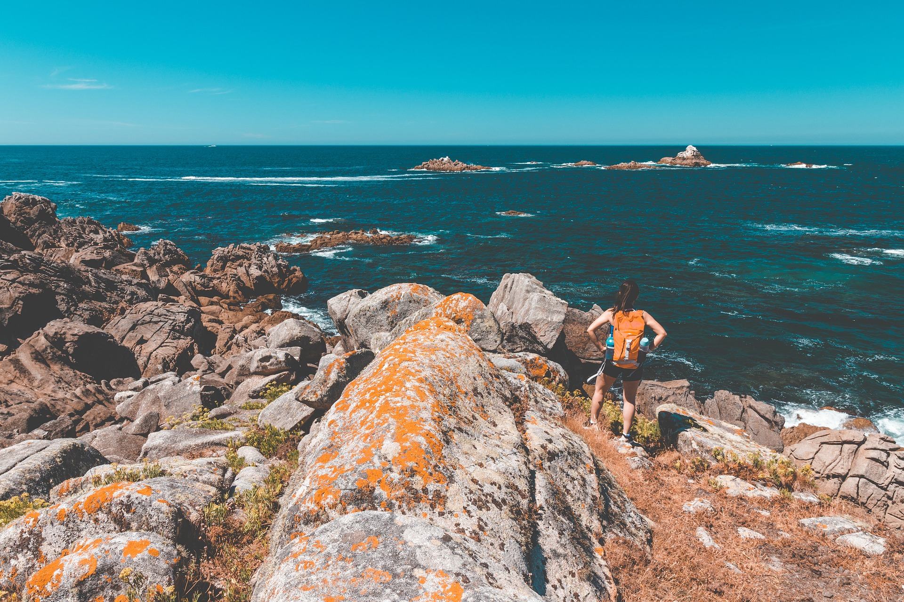

Sara · Easy Camino Santiago
Tu experta en el Camino de Santiago
¿Te llamamos gratis?
Déjanos tu número y te llamamos en menos de 24h para asesorarte sin compromiso.
Tu número solo se usará para llamarte. Sin spam.
Tu experta en el Camino de Santiago
Déjanos tu número y te llamamos en menos de 24h para asesorarte sin compromiso.
Tu número solo se usará para llamarte. Sin spam.

El Camino no termina en Santiago. Continúa hasta el Faro de Finisterre, el punto más occidental de Europa continental, donde el sol se hunde cada tarde en el Atlántico. 87km más de pura magia gallega.
Durante siglos, los peregrinos medievales que llegaban a Santiago de Compostela no se detenían ahí. Seguían caminando tres días más hacia el oeste, hasta llegar al cabo Finisterre —"Finis Terrae" en latín, el fin de la tierra— donde el continente europeo literalmente se acaba y comienza el océano Atlántico. Para ellos, ese era el verdadero final del Camino: el punto donde no había más tierra, solo agua y la puesta de sol más bella del mundo.
Hoy, el Camino de Finisterre es uno de los tramos más especiales para los peregrinos que han llegado a Santiago. Tras la euforia de la Plaza del Obradoiro, estos 87 kilómetros adicionales ofrecen una transición diferente: el Camino se vacía de peregrinos, los paisajes se vuelven más salvajes y el ritmo se ralentiza. Por las aldeas de piedra de Galicia, entre eucaliptos y pinos, el camino desciende lentamente hacia el océano.
La tradición más poderosa del Camino de Finisterre es la quema de ropa al llegar al faro: botas, calcetines, una prenda usada durante el Camino. Es un ritual de purificación, de dejar atrás lo viejo y abrazar lo nuevo. Ver la puesta de sol desde el faro de Finisterre —el 0,00km del Camino— mientras el sol se hunde en el Atlántico es una experiencia que no se olvida. Algunos peregrinos añaden la extensión a Muxía (+31km), otro santuario atlántico de gran devoción jacobea.
3 etapas desde Santiago hasta el faro del fin del mundo.
La salida de la ciudad sagrada. El primer día del Camino de Finisterre comienza en la Catedral y atraviesa el extrarradio de Santiago por caminos entre pinos y eucaliptos. Cruzando el río Tambre por el puente romano, se llega a Negreira, la primera gran parada antes de la costa.
El corazón rural de Galicia. La etapa más larga y quizá la más bella del Camino de Finisterre. El camino atraviesa un Galicia profunda y auténtica, con aldeas de cuatro casas, hórreos milenarios, cruceiros en cada cruce y vacas rumiando bajo la lluvia. Olveiroa, un diminuto pueblo medieval perfectamente conservado, es la parada antes del gran final.
El gran final: el faro del 0,00km. La última etapa desciende desde Olveiroa por montes de tojo y brezo hasta la villa de Finisterre, con su puerto pesquero y sus restaurantes de marisco. Desde el pueblo, el último kilómetro hasta el faro es una subida corta pero cargada de emoción. En la piedra km 0,00 se termina el Camino. El Atlántico y el poniente esperan al peregrino.
Para los que quieren más. Desde Finisterre, un día adicional de camino lleva hasta Muxía, el otro gran santuario atlántico de la Costa da Morte. La Virxe da Barca, la piedra de abalar y la costa salvaje de los naufragios son dignos de este epílogo del epílogo. Recomendamos combinarlo con el regreso en autobús o taxi a Santiago.
El epílogo perfecto para tu Camino. Combinable con cualquier ruta jacobea.
Alojamiento en habitación compartida en albergues privados seleccionados en el Camino de Finisterre
Habitación privada en pensiones y casas de aldea con encanto en la ruta a Finisterre
Precios por persona en habitación doble. Suplemento individual disponible. Añade la extensión a Muxía por 89€ más.
Albergues o pensiones seleccionadas noche a noche en el Camino de Finisterre.
Recogemos tu mochila cada mañana y la llevamos al siguiente alojamiento.
El certificado oficial de llegada al Km 0,00 de Finisterre, entregado en el albergue del faro.
Guía completa con mapas, distancias y puntos de interés de la Costa da Morte.
Línea de emergencias disponible las 24 horas durante todo el recorrido a Finisterre.
Te informamos de las mejores playas, miradores y restaurantes de la legendaria Costa da Morte.
No, el Camino de Finisterre no da derecho a la Compostela, ya que esta solo se obtiene llegando a Santiago de Compostela. Sin embargo, al llegar al faro de Finisterre puedes obtener la "Fisterrana", un certificado oficial expedido por el albergue del faro que acredita que has completado el Camino hasta el km 0,00. Este documento es muy valorado y querido por los peregrinos como complemento a la Compostela.
Sí, es una tradición antigua que sigue muy viva. La quema en la playa o cerca del faro tiene un significado simbólico de purificación y cierre: deshacerse de lo viejo, de lo que ya no necesitas, para comenzar una nueva etapa vital. Algunos peregrinos queman botas desgastadas, calcetines, una camiseta. Otros simplemente llevan una nota escrita con lo que quieren dejar atrás. Es un ritual muy personal y muy poderoso.
Sí, técnicamente sí. El Camino de Finisterre comienza en Santiago y no requiere haber hecho otro Camino previamente. Sin embargo, culturalmente tiene más sentido hacerlo como continuación de otro Camino, ya que la emoción de seguir caminando después de alcanzar Santiago es única. Dicho esto, muchas personas hacen solo este tramo por su belleza paisajística y su significado espiritual, sin haber hecho el Camino Francés o Portugués.
Si tienes tiempo, los dos. Finisterre y Muxía son los dos grandes santuarios atlánticos de la Costa da Morte y se complementan perfectamente. Finisterre es el km 0,00, el punto más occidental, con el faro icónico. Muxía es un santuario mariano de enorme devoción con una energía especial junto al mar. La ruta clásica es ir a Finisterre (3 días desde Santiago) y continuar a Muxía (1 día más), o viceversa, y regresar en bus a Santiago.
El Camino de Finisterre puede hacerse todo el año, pero los meses más recomendables son mayo-junio y septiembre-octubre. En verano la Costa da Morte está en su mejor momento aunque con más turistas. En invierno el camino puede ser muy ventoso y lluvioso, aunque tiene una belleza dramática incomparable. Lo ideal es llegar al faro a tiempo para la puesta de sol: asegúrate de gestionar bien la última jornada para no llegar de noche.
El Camino de Finisterre es el final perfecto para cualquier Camino de Santiago. Cuéntanos y te lo planificamos junto con tu ruta jacobea o por separado.